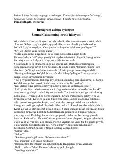

UGIjtimoiy tarmoqlar asiriga aylangan qizning ibratli hayot yo'li.
Ushbu hikoya ijtimoiy tarmoqlarga haddan tashqari berilib ketgan Ummu Gulsum ismli qizning hayoti va uning ma'naviy dunyosi haqida hikoya qiladi. Asar qizning virtual olamdagi mashhurlik ortidan quvib, haqiqiy hayotiy qadriyatlarni unutib qo'yishi va keyinchalik o'zligini anglash jarayonini yoritib beradi.